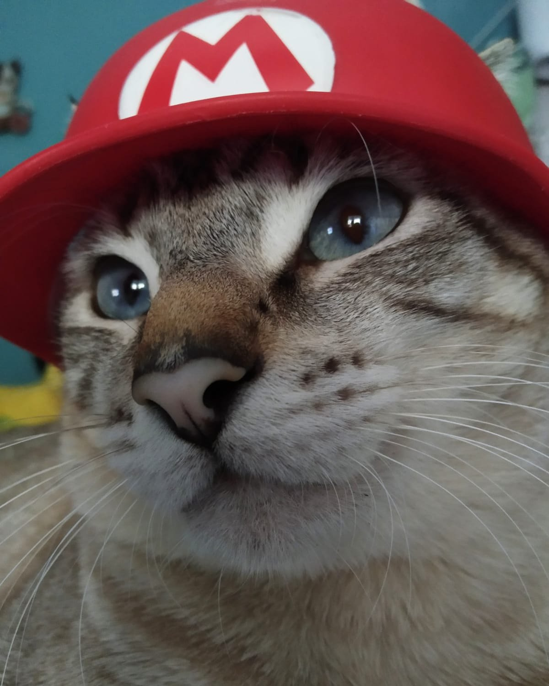
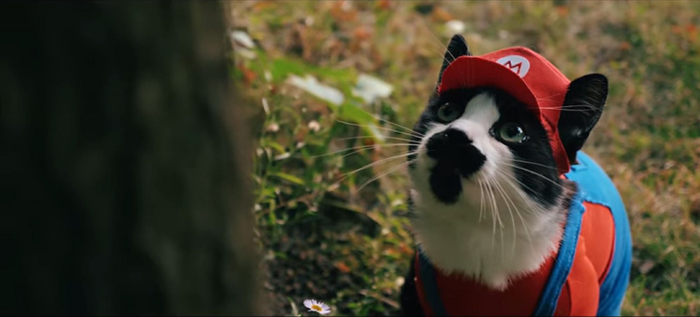

La vida de gatobros

Oliver nació en una pequeña ciudad y fue adoptado por una familia amorosa cuando era solo un gatito. Desde temprana edad, mostró una inteligencia y curiosidad excepcionales, lo que llevó a su dueña a enseñarle palabras y frases básicas. Pronto, Oliver comenzó a responder a las preguntas de su familia con maullidos que parecían tener un significado claro.
La habilidad de Oliver para hablar se hizo viral en las redes sociales, atrayendo la atención de personas de todo el mundo. Su cuenta de Instagram cuenta con millones de seguidores y ha aparecido en varios programas de televisión y revistas.
Oliver utiliza su fama para difundir mensajes de amor propio y empoderamiento. A través de sus publicaciones en las redes sociales, anima a sus seguidores a ser valientes, a seguir sus sueños y a no tener miedo de ser ellos mismos.

Debido a su popularidad, Oliver ha realizado colaboraciones con varias marcas de productos para mascotas, promoviendo productos que considera de alta calidad y beneficiosos para los gatos y otros animales.
Oliver ha dejado una huella imborrable en el mundo de las mascotas, demostrando que los gatos son seres inteligentes y capaces de una comunicación más profunda con los humanos. Su historia ha inspirado a muchas personas a establecer una conexión más significativa con sus propias mascotas y a tratarlas con el respeto y el amor que se merecen.